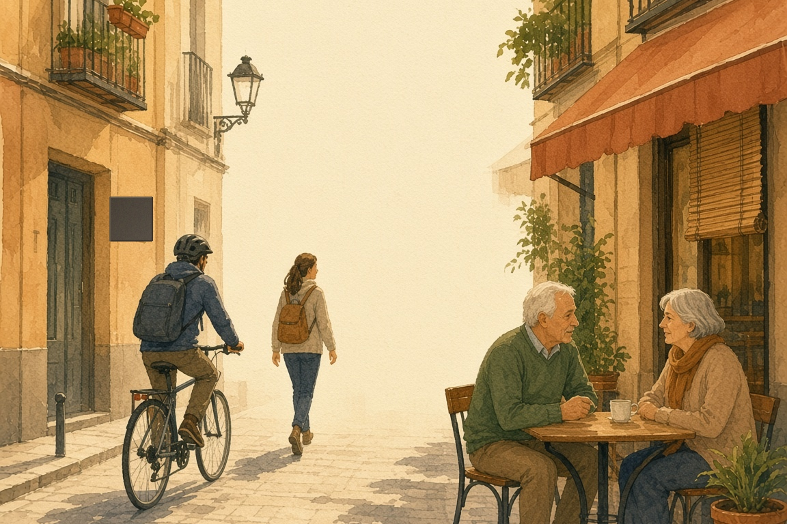

- B2
- Un tópico
La siesta, más leyenda que costumbre
Un colega en Boston lo tenía claro: en España, todo el mundo duerme la siesta. Madrid lo desmintió.
Included for Edison Spanish students · Book a trial class
The full reading, its translation, glossary, audio and exercises are part of the student materials.